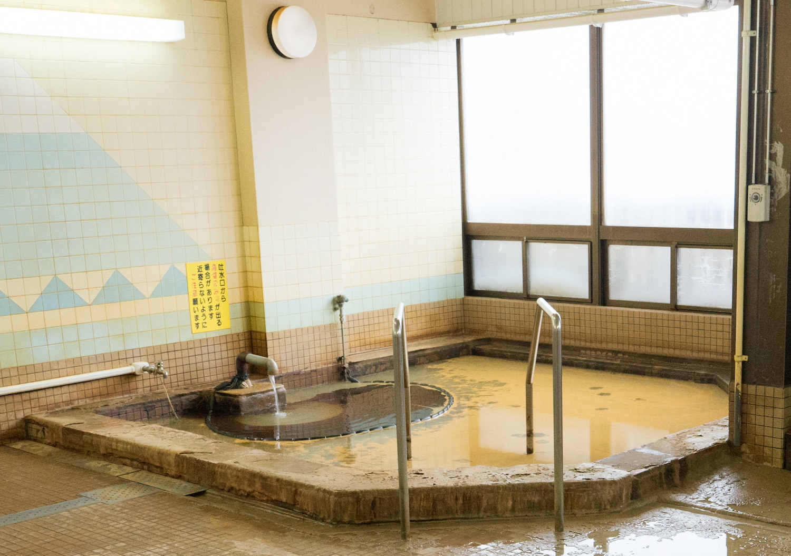

Hokkaido is the second largest island of Japan and comprises the largest and northernmost prefecture. The Tsugaru Strait separates Hokkaido from Honshu; the two islands are connected by the undersea railway Seikan Tunnel. The largest city on Hokkaido is its capital, Sapporo, which is also its only ordinance-designated city. (Source: Wikipedia)
Prefecture Image
Toyotomi Onsen
Cape Soya
Tour Hokkaido